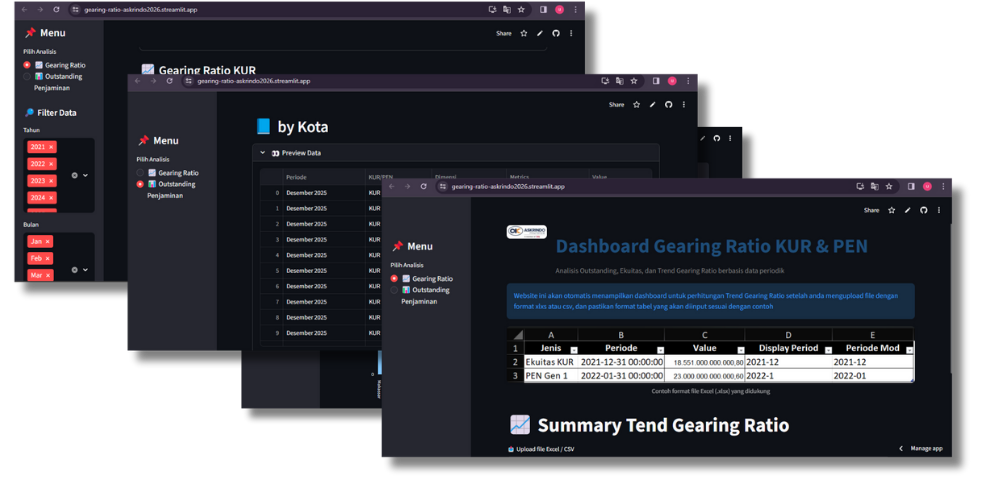
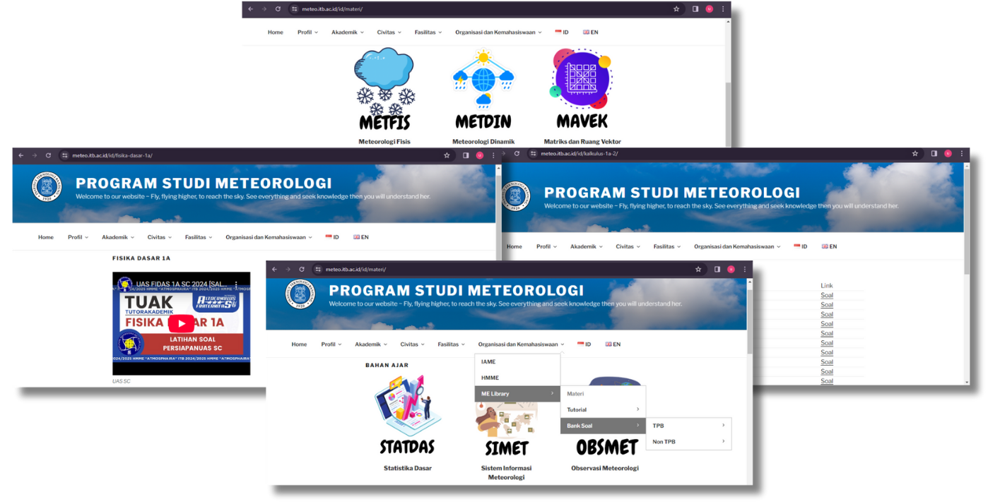
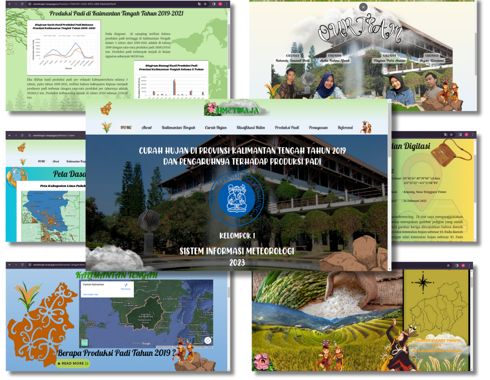
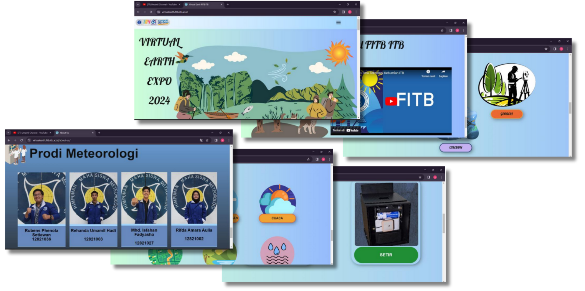

Personal Hub
A. Website Gearing ratio Askrindo (Streamlite)

Link website Gearing ratio : Click here!
🎯Salah satu project divisi aktuaria PT.Asuransi Kredit Indonesia yaitu membuat Web dashboard “Gearing Ratio KUR & PEN” untuk memantau, menganalisis, dan mengendalikan rasio penyaluran kredit (KUR dan PEN) terhadap dana yang dimiliki lembaga, sehingga membantu pengambilan keputusan berbasis data secara cepat dan akurat. Ppenggunaannya cukup memilih menu (misalnya filter data berdasarkan kota/periode), melihat tabel dan grafik rasio, lalu menganalisis tren melalui fitur ringkasan (summary) untuk mengetahui kondisi kinerja penyaluran kredit; manfaatnya bagi perusahaan asuransi atau lembaga keuangan adalah meningkatkan pengelolaan risiko, memastikan keseimbangan likuiditas, mendukung kepatuhan regulasi, serta membantu analis dan manajer lebih mudah dan cepat dalam pekerjaan sehari-hari untuk mengevaluasi performa portofolio dan menentukan strategi bisnis yang lebih tepat.
B. Website Meteorologi ITB (ME Library)

Link website ME Library Meteo: Click here!
🎯Salah satu project capaian selama menjadi Kepala akademik keorganisasian HMME"Atmosphaira"ITB yaitu pembuatan pustaka online berupa website yang terintegrasi dengan website program studi meteorologi ITB. Project ini bertujuan agar semua bahan ajar dan kelas tutorial tersusun dengan rapi dan mudah diakses oleh para anggota himpunan.
C. Website Simeteo

Link website Simeteo (Nice Page) : Click here!
🎯Salah satu project kelompok dalam matakuliah informasi meteorologi. Project ini bertujuan untuk menyampaikan informasi tentang meteorologi agar masyarakat mendapatkan informasi yang berkaitan dengan isu perubahan iklim, cuaca dan lingkungan. Maka hasil dari project ini menampilkan informasi berupa website.
D. Website Virtual Earth Expo FITB ITB 2022

Link website Virtual Earth Expo 2022 FITB (Nice Page) : Click here!
🎯Salah satu project Virtual Earth EXPO FITB ITB sebagai asisten dosen Perangkat Rekayasa Dan Design. Project ini bertujuan untuk menampilkan hasil karya mahasiswa TPB mata kuliah PRD agar bisa dilihat dan dinilai langsung oleh para pengunjung secara visual menggunakan voting. Website ini dibuat menggunakan nicepage didesign dengan canva dan menggunakan fitur tambahan google formulir.